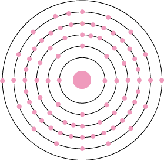

Name: Platinum
Formula: Pt
Atomic Number: 78
Group: 10
Block: d
Relative Atomic Mass: 195.084
Discovery Date: 1750
Appearance: A shiny, silvery-white metal
Uses: Jewellery, catalytic converters for vehicles,computer hard disks, optical fibres, chemotherapy drugs.
Atomic Structure: 2,8,18,32,17,1
